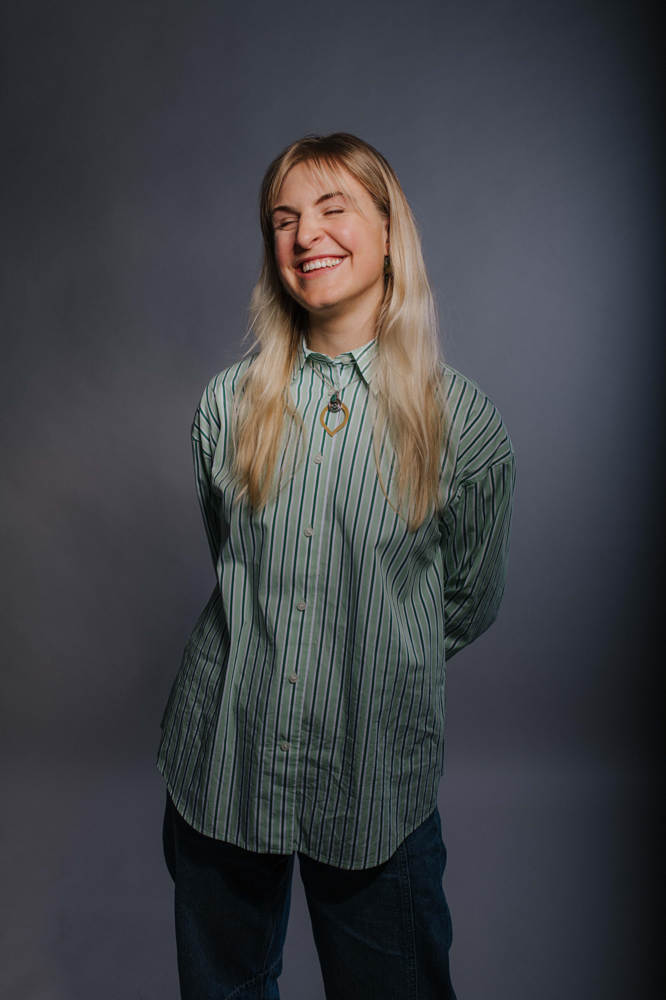
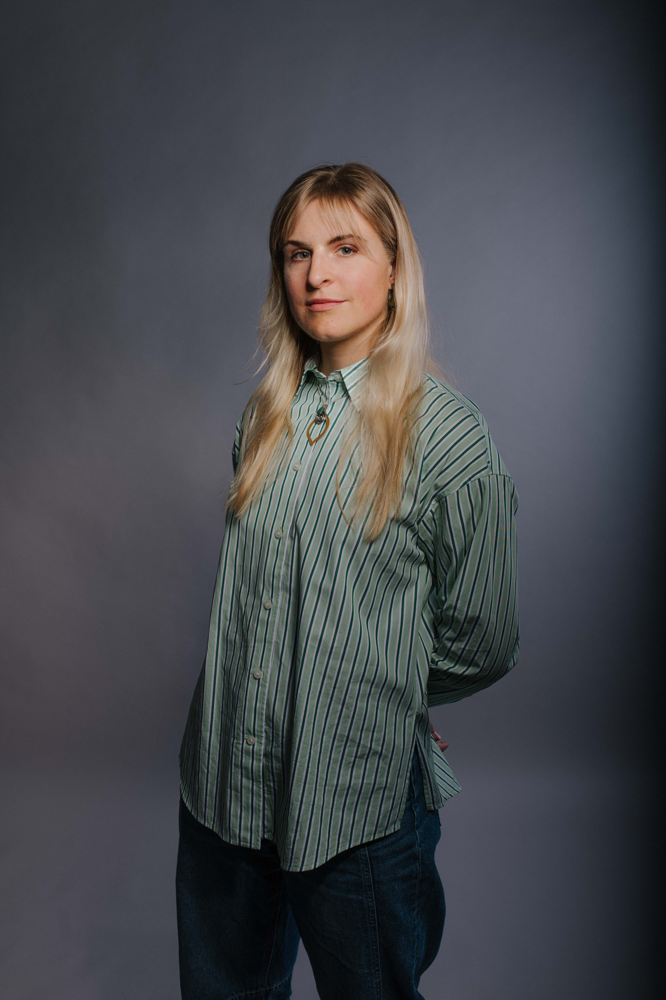

Wissenschaftsjournalistin
mma Lehmkuhl schreibt über naturwissenschaftliche Forschung – und darüber, wie sie Gesellschaft und Kulturen prägt. Sie begeistert sich für Geschichten, die Menschen staunen lassen. Diese zu erzählen und einzuordnen, lernte sie an der TU-Dortmund. Dort studierte sie Wissenschaftsjournalismus mit den Schwerpunkten Biologie und Medizin. Im Ruhrgebiet arbeitete sie für das Rhine-Ruhr-Center for Science Communication Research und baute das Magazin LOT mit auf: ein Special Interest Heft rund um Kaffee.
In ihrem Volontariat bei GEO verfestigte sich die Leidenschaft für emotionale Reportagen aus den Bereichen Umwelt, Gesundheit und Reisen. Sie absolvierte den Kompaktkurs an der Henri-Nannen-Schule (HNS) und begann sich währenddessen mit künstlicher Intelligenz zu beschäftigen.
Nach einer Hospitanz beim ZDF Auslandsstudio Wien, arbeitet sie jetzt in Teilzeit für den SPIEGEL als KI-Beauftragte im Crossmedia-Ressort. Als freie Autorin schreibt sie unter anderem für GEO und macht Podcast für den SWR.

